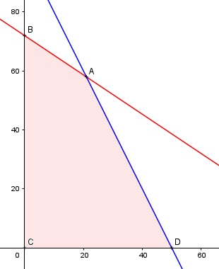

Aufgabe 85 Für eine elektrische Montage haben die Monteure in ihren Behältern 21 600 cm³ Platz für Batterien. Ihnen werden Batterien vom Typ A mit 200 cm³ Raumbedarf und vom Typ B mit 300 cm³ angeboten. Typ A kostet 10 € Typ B 5 €. Typ A liefert 18 Stunden lang Strom Typ B 16 Stunden. Wieviel Batterien von Typ A und B sollten die Monteure kaufen, wenn die Nutzungsdauer N maximal sein soll und ihnen 500 € für den Einkauf zur Verfügung stehen? x = Typ A y = Typ B Bedingungen: 200x + 300y ≤ 21 600 10x + 5y ≤ 500 x ≥ 0 x ∈ ℕ y ≥ 0 y ∈ ℕ Zielfunktion: N = 18x + 16y Randgerade 1: 200x + 300y = 21 600 Randgerade 2: 10x + 5y = 500

Die Eckpunkte A, B, C, D bilden das Planungs- gebiet, das alle Ungleichungen erfüllt. Eckpunkt A ist der Schnittpunkt der Randgeraden 1 und 2 200x + 300y = 21 600 (1) 10x + 5y = 500 (2) (1) + (2) * (-20) 200x + 300y = 21 600 -200x - 100y = -10 000 ----------------------- 200y = 11 600 |:700 y = 58 Eingesetzt in (1): 200x + 300 * 58 = 21 600 |-17 400 200x = 4 200 |:200 x = 21 A(21|58) Die Monteure sollten 21 Batterien vom Typ A und 58 vom Typ B kaufen. Nmax = 21 * 18 + 58 * 16 = 1 306 h